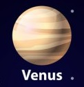
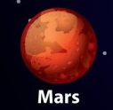
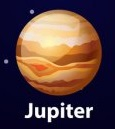
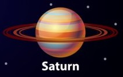
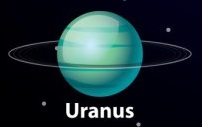
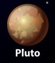

El sistema solar, que se formó hace unos 4.600 millones de años, es un grupo planetario que solo tiene una estrella conocida: el Sol.
Esta estrella, que contiene más del 99% de la masa del sistema, es el único cuerpo celeste del sistema solar capaz de producir luz propia.
Todos los planetas y planetas enanos del sistema giran a su alrededor.
Estas son algunas de las características principales del sistema solar, y sus planetas son 8, en orden de
proximidad al Sol: Mercurio, Venus, Tierra, Marte, Júpiter, Saturno, Urano y Neptuno. Y el planeta enano Pluton.
| Planeta | Posición | Masa | Imagen |
|---|---|---|---|
| Mercurio | 1 | 0.06 | |
| Venus | 2 | 0.82 |  |
| Tierra | 3 | 1.00 | |
| Marte | 4 | 0.11 |  |
| Júpiter | 5 | 318 |  |
| Saturno | 6 | 95.1 |  |
| Urano | 7 | 14.6 |  |
| Neptuno | 8 | 17.2 | |
| Plutón | 9 | 0.002 |  |
Elaborado por: Diego Ivan Perez Orozco